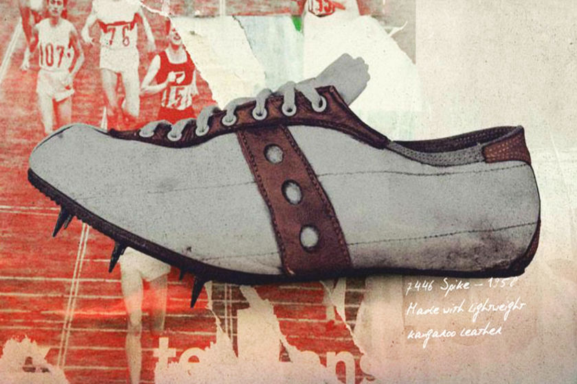
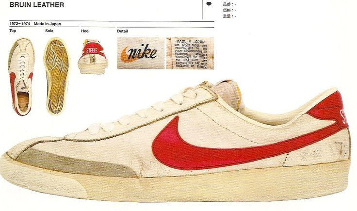
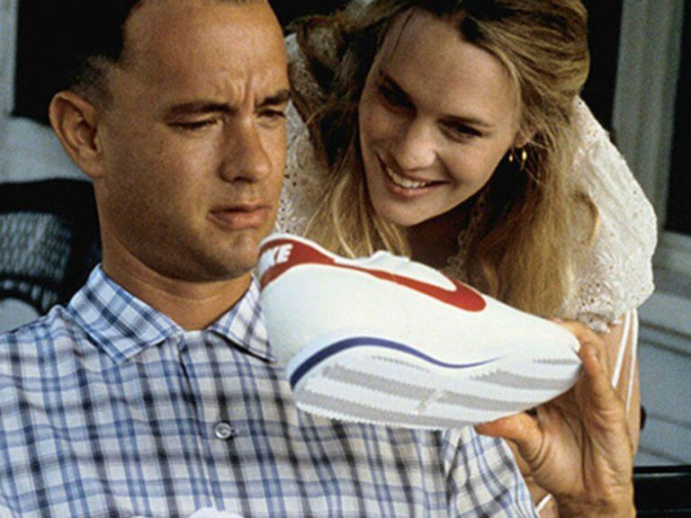

Los primeros tenis deportivos
Investigación del sociólogo Yuniya Kawamura en zapatillas de deporte define tres olas del fenómeno. La primera ola de la década de 1970 estuvo definida por una cultura underground de las zapatillas deportivas y el surgimiento del hip-hop. El diseño Samba de Adidas, como ejemplo clave, se convirtió en un pieza clave de Terrace Fashion dentro de la subcultura de los aficionados al fútbol. En 1986, Run-DMC lanzó la canción My Adidas, lo que llevó a un acuerdo de patrocinio con la marca. Esto forjó el lugar profundamente arraigado de las zapatillas en la cultura popular.
La segunda ola del fenómeno comenzó en 1984 con la lanzamiento de Nike Air Jordan. Esto dio lugar a la mercantilización de las zapatillas de deporte y su atractivo como artículos de estatus, impulsado por el respaldo de las celebridades. Para Kawamura La tercera ola está marcada por la era digital y el consiguiente crecimiento del marketing de zapatillas y la cultura de reventa.
El mercado mundial de reventa de zapatillas de deporte se valoró en $6 mil millones de dólares (£4,6 mil millones de libras esterlinas) en 2019 y se prevé que valga US$30 mil millones (£21 mil millones) para 2030.
La creciente presencia de “zapatillas” que coleccionan y comercializan zapatillas se han asegurado de mantener un estatus de culto. Nike y Adidas lanzan habitualmente zapatos de ediciones limitadas asociado con una celebridad, estrella del hip-hop o atleta.
Otros zapatos deportivos importantes del siglo XX incluyeron el Converse All Star, diseñado para baloncesto. Sin embargo, son Adidas y Nike las que han dado forma a la evolución de las zapatillas desde el deporte hasta el estilo.
Las zapatillas están hechas de compuestos flexibles, típicamente presentando una suela única hecha de goma densa. Mientras el diseño original era básico, los fabricantes han ido adaptando desde entonces las zapatillas para usos más concretos. Un ejemplo de este es la zapatilla con clavos desarrollada para carreras en pista. Algunas de estas zapatillas están fabricadas en medidas inusualmente grandes para atletas con pies grandes.

